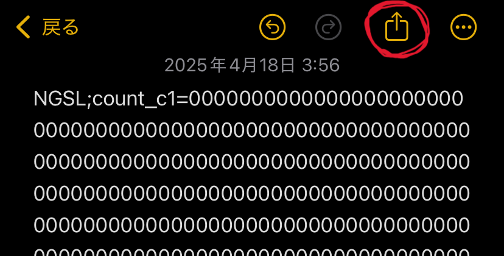
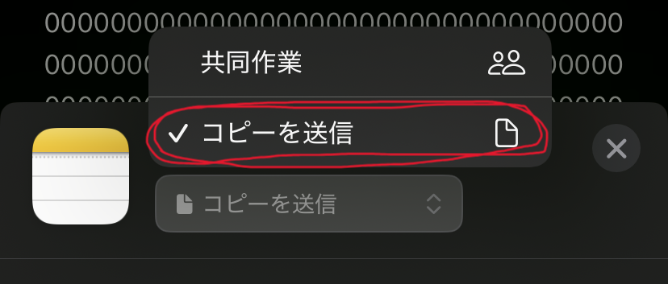
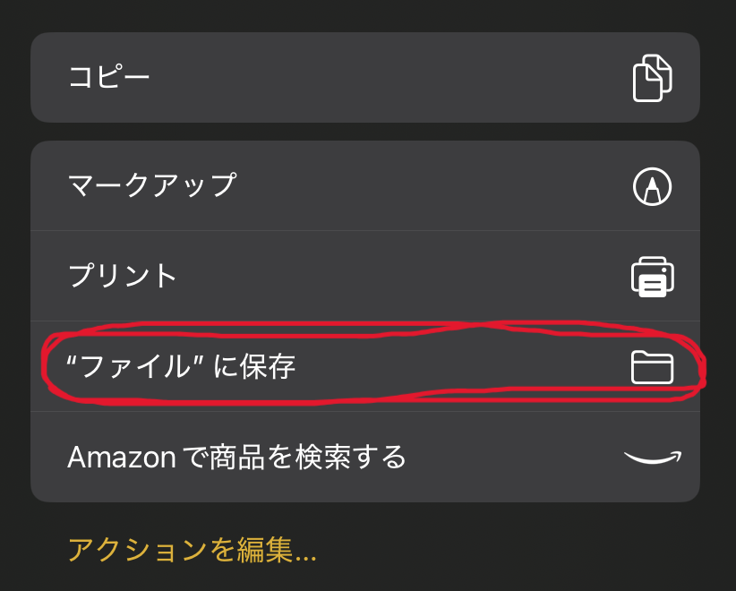

ホーム
>
NGSL
> 引継ぎ
ファイル読み込み
前回出力したtextファイルを読み込み、データを引き継ぎます。
ファイル出力
現在の学習データをtextファイルで出力します。
※
iPhoneのSafari
からだと、たまにファイルのダウンロードが完了しない場合があります。お手数ですが以下の方法でもtxtファイルを作成することができます。
①以下のテキスト（学習記録データ）をコピーしてiPhone標準搭載の「メモアプリ」に貼り付けます。
②共有ボタンを押します。

③「共同作業」のところを「コピーを送信」にします。

③「”ファイル”に保存」を押すとtxtファイルとして保存されます。分かりやすい名前を付けて保存してください。
